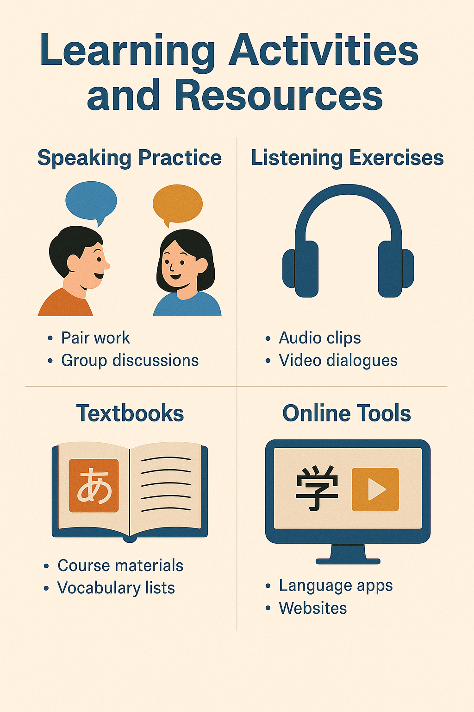

โครงสร้างประโยคภาษาญี่ปุ่นต่างจากภาษาไทย โดยทั่วไปมีลักษณะประธาน + กรรม + กริยา ตัวอย่างประโยคง่าย ๆ
• 私は学生です (わたしはがくせいです) — ฉันเป็นนักเรียน คำช่วย (Particle) สำคัญมาก เช่น• は (wa) ใช้บอกหัวข้อประโยค
• が (ga) ใช้บอกประธานของประโยค
• を (wo) ใช้บอกกรรมของกริยา
การผันคำกริยา เพื่อบอกกาลและความสุภาพ เช่น• 食べる (たべる, taberu) = กิน
• 食べます (たべます, tabemasu) = กิน (สุภาพ)
• 食べた (たべた, tabeta) = กินแล้ว (อดีต)
ตัวอย่างประโยคพื้นฐาน• おはようございます (ohayou gozaimasu) — สวัสดีตอนเช้า (สุภาพ)
• これは何ですか？ (これはなんですか？) — นี่คืออะไร?
• トイレはどこですか？ (トイレはどこですか？) — ห้องน้ำอยู่ที่ไหน?
